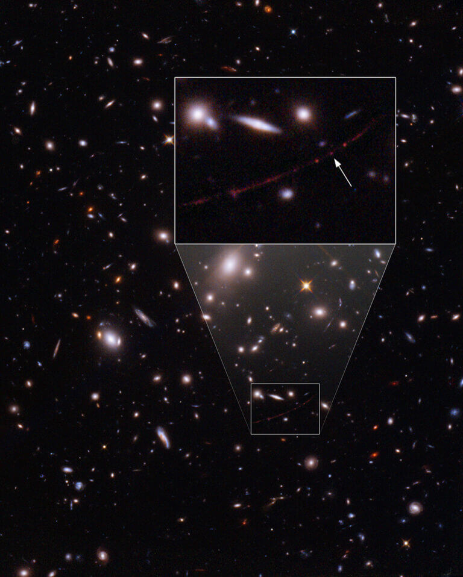
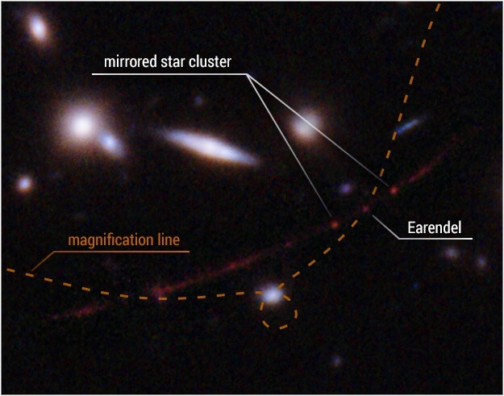
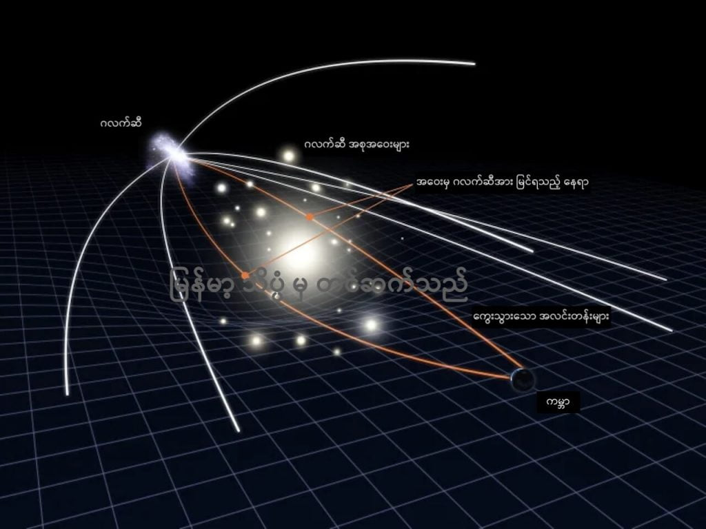

ဒီကြယ်ကြီးဟာ စကြာဝဠာ အစ မဟာ ပေါက်ကွဲမှုကြီး (Big Bang) ဖြစ်ပြီး ပထမ နှစ်သန်း ၁၀၀၀ အတွင်း မှာ ပထမဆုံး ဖြစ်ထွန်းခဲ့တဲ့ ကြယ်တွေအနက်က တစ်စင်း ဖြစ်ပါတယ်။
ယခု တွေ့ရှိချက်ဟာ ယခင် တွေ့ရှိခဲ့တဲ့ အစောဆုံး ကြယ်ထက် နှစ်သန်း ထောင်ပေါင်းများစွာ ပိုစောနေပါတယ်။ ယခင်က တွေ့ရှိခဲ့တဲ့ အစောဆုံး ကြယ်ဟာ စကြာဝဠာ ဖြစ်တည်အပြီး နှစ်သန်း ၄ ထောင် လောက်မှာ ဖြစ်တည်ခဲ့တာ ဖြစ်ပါတယ်။
ယခင် တွေ့ခဲ့တဲ့ အစောဆုံး ကြယ်ကိုလဲ ဟတ်ဘယ် တယ်လီစကုပ် ကြီးကပဲ ၂၀၁၈ မှာ ရှာဖွေ တွေ့ရှိခဲ့တာ ဖြစ်ပါတယ်။ စကြာဝဠာရဲ့ သက်တမ်းကို အခုအချိန် အထိ နှစ် ၁၀၀ ရှိတယ်လို့ သတ်မှတ်ရင် စကြာဝဠာ အသက် နှစ် ၃၀ လောက်မှာ ရှိခဲ့တာပါ။
အခု အသစ်တွေ့တဲ့ ကြယ်ကြီးကတော့ လွန်ခဲ့တဲ့ နှစ် ၁၂.၉ ဘီလီယံ ကာလ (သန်းပေါင်း ၁၂,၉၀၀ နှစ်) က ဖြစ်တည်ခဲ့တဲ့ ကြယ်ကြီး ဖြစ်ပါတယ်။ ဒီကာလဟာ မဟာ ပေါက်ကွဲမှု ဖြစ်ပြီး နှစ်သန်း ၁၀၀၀ တောင် မရှိသေးတဲ့ အစဦး ကာလ ဖြစ်ပါတယ်။ တနည်းအားဖြင့် စကြာဝဠာရဲ့ အသက် ၇ နှစ်သား လောက်ပဲ ရှိသေးတဲ့ အချိန်ပေါ့။
ပုံမှန်အားဖြင့်တော့ ဒီလောက် ဝေးတဲ့ အရပ်က ကြယ်တွေကို တစ်လုံးခြင်းစီ တွေ့ရဖို့က မဖြစ်နိုင်ပါဘူး။ ဒီလောက် အကွာအဝေးမှာ ကြယ်တွေကို တစ်လုံးချင်း မတွေ့ရ တော့ပဲ ကြယ်စုတွေ (သို့) ဂလက်ဆီ တွေအဖြစ်ပဲ မြင်တွေ့ ရပါတော့တယ်။
“စတွေ့စက ကျွန်တော်တို့ ယုံတောင် မယုံနိုင်ပါဘူး။ ဒါက အရင် တွေ့ခဲ့တဲ့ အဝေးဆုံး ကြယ်ထက် အများကြီး ပိုဝေးပါတယ်” လို့ ဂျွန်ဟော့ကင်း တက္ကသိုလ်က နက္ခတ် ပညာရှင် ဘရိုင်ယန် ဝဲလ်ရှ် (Brian Welch of the Johns Hopkins University in Baltimore) က ပြောပါတယ်။ သူဟာ အခု တွေ့ရှိမှုကို ဦးဆောင်ခဲ့သူ ဖြစ်ပါတယ်။
သူဦးဆောင်တဲ့ အဖွဲ့ဟာ ဒီ တွေ့ရှိမှုကို မတ်လ ၃၀ ဒီနေ့ထုတ် Nature သုတေသန ဂျာနယ်မှာ တင်ပြ ထားပါတယ်။

“ပုံမှန် ဆိုရင်တော့ ဒီလောက် အကွာအဝေးမှာ ဂလက်ဆီ တွေကို အလင်းစက် အလင်းပြောက် ကလေးတွေ အနေနဲ့ပဲ မြင်တွေ့ရလေ့ ရှိပါတယ်။ ဒါပေမယ့် အခု တွေ့တဲ့ ကြယ် ပါဝင်တဲ့ ဂလက်ဆီကတော့ “ဆွဲအားမှန်ပြောင်း (gravitational lensing)” ကြောင့်မို့ ပုံကြီးချဲ့ သလို ဖြစ်ပြီး ကမ္ဘာက ကြည့်ရင် လခြမ်းပုံ ဆန့်ထွက်နေသလို မြင်ရပါတယ်။ ဒီ လခြမ်းပုံကို ကျွန်တော်တို့က Sunrise Arc လို့ အမည်ပေး ထားပါတယ်” လို့ သူက ဆက်ရှင်းပြပါတယ်။
ဒီ လခြမ်းပုံ ဆန့်ထွက်နေတဲ့ ဂလက်ဆီ ပုံရိပ်ကို အသေးစိတ် လေ့လာပြီးနောက် ဝဲ့လ်ရှ် နဲ့ အဖွဲ့ဟာ ဒီ အထဲက အနီစက်လေး တစ်စက်ဟာ အဆများစွာ ပုံကြီးချဲ့ ထားတဲ့ ကြယ်ကြီး တစ်စင်း ဖြစ်တယ်ဆိုတာ တွေ့ရှိခဲ့ ကြပါတယ်။
ဒီ ကြယ်ကြီးကို သူတို့က “Earendel” လို့ အမည် ပေးခဲ့ ပါတယ်။ Earendel ဆိုတာက ရှေးဟောင်း အင်္ဂလိပ် စကား (old English) နဲ့ Morning Star (မိုးသောက်ကြယ်) လို့ အဓိပ္ပါယ် ရပါတယ်။
ယခု တွေ့ရှိချက်ဟာ ယခင်က မရှိခဲ့တဲ့ သုတေသန နယ်ပယ် တစ်ရပ်ကို ဖွင့်လှစ်ပေးခဲ့တာမို့ အလွန် အရေးပါတယ်လို့ သုတေသီ တွေက ပြောပါတယ်။
“မိုးသောက်ကြယ် ဟာ ယခုကာလလို ဒြပ်စင်တွေ အစုံအလင် မရှိသေးတဲ့ စကြာဝဠာ အစဦး ကာလက ဖြစ်တည်ခဲ့တဲ့ ကြယ်ကြီး တစ်စင်း ဖြစ်ပါတယ်။ ဒီ ကြယ်ကို လေ့လာခြင်း အားဖြင့် ယခု ကာလ နဲ့ မတူညီတဲ့ စကြာဝဠာ အစောပိုင်း ကာလကို လေ့လာဖို့ အခွင့်အလမ်း ရရှိမှာ ဖြစ်ပါတယ်။
ဒီကာကလဟာ ကျွန်တော်တို့ ရင်းနှီး ယဉ်ပါးမှု မရှိတဲ့ ကာလ အပိုင်းအခြား တစ်ခုပါ။ ဒါပေမယ့် ဒီကလမှာ ဖြစ်ပျက်ခဲ့ တာတွေကြောင့် ယခု တွေ့နေရတဲ့ စကြာဝဠာ ဖြစ်လာရတာပါ။
ဥပမာဗျာ စာအုပ်တစ်အုပ်ကို ကျွန်တော်တို့က အခန်း (၂) ကနေ စဖတ်ပြီး အခန်း (၁) ကို မှန်းစနေ ရသလိုမျိုးပေါ့။ အခုတော့ ကျွန်တော်တို့ အနေနဲ့ အခန်း (၁) ကို ဖတ်ခွင့် ရတော့မယ်လို့ ပြောလို့ ရပါတယ်” လို့ သူက ဆက်ရှင်းပြပါတယ်။

ပညာရှင် တွေရဲ့ ခန့်မှန်းချက် အရ အခု မိုးသောက်ကြယ် ဟာ လက်ရှိ ကျွန်တော်တို့ နေထက် အနည်းဆုံး အဆ ၅၀ လောက် ဒြပ်ထု ပိုကြီးမယ်လို့ ယူဆပါတယ်။ ဒါ့အပြင် နေထက် အဆ သန်းပေါင်းများစွာ ပိုပြီး တောက်ပမယ် လို့လဲ ယူဆကြပါတယ်။ စကြာဝဠာ အတွင်းက အတောက်ပဆုံး ဆိုတဲ့ ကြယ်တွေနဲ့ ယှဉ်နိုင်တယ်လို့ ဆိုပါတယ်။
ဒါပေမယ့် ဒီလို အတောက်ပဆုံး ကြယ်တစ်စင်း ဖြစ်တာတောင် ပုံမှန်ဆို ဒီ အကွာအဝေးမှာ မြင်နိုင်မှာ မဟုတ်ပါဘူး။ အခု တွေ့မြင်ရတာက gravitational lensing ခေါ် ဆွဲအားမှန်ဘီလူး ကြောင့် မြင်ကြရတာပါ။
ကျွန်တော်တို့ ကမ္ဘာနဲ့ မိုးသောက်ကြယ် အကြားမှာ WHL0137-08 ဆိုတဲ့ ဧရာမ ဂလက်ဆီ အစုအဝေး (Galaxy cluster) ကြီး တစ်ခု ရှိနေပါတယ်။
ဂလက်ဆီ အရေအတွက် အများအပြား ပါဝင် စုဖွဲ့ထားတဲ့ ဒီ ဂလက်ဆီ အစုအဝေး ကြီးရဲ့ ပြင်းထန်တဲ့ ဆွဲအားကြောင့် ဒီ ဂလက်ဆီ စု ကြီးရဲ့ တဖက်ခြမ်းက လာတဲ့ အလင်းဟာ မှန်ဘီလူးကို ဖြတ်လာရ သလို ခုံးပြီး ကွေးသွားပါတယ်။
ဒီလို အလင်းယိုင်ပြီး ကွေးသွားတာဟာ ကြောင့် တဖက်က အလင်းတွေဟာ မှန်ဘီလူးနဲ့ ချဲ့ပေးလိုက် သလိုမျိုး ဖြစ်သွားပါတယ်။ ဒီလို ဆွဲအားကြောင့် မှန်ဘီလူးလို ဖြစ်လာတာ မျိုးကို ဆွဲအား မှန်ဘီလူး လို့ ခေါ်တာ ဖြစ်ပါတယ်။
(မှတ်ချက်။ အလင်းတွေ ယိုင်သွားတာဟာ ဒီ ဂလက်ဆီရဲ့ ကြီးမားတဲ့ ဒြပ်ထုကြောင့် သူ့ပတ်လည်က အာကာသ ဟင်းလင်းပြင် (space) ပုံပျက်ပြီး ကွေးသွားတာကြောင့် ဖြစ်ပါတယ်။)
အခု မိုးသောက်ကြယ်ဟာ ဒီ ဆွဲအား မှန်ဘီလူး ရဲ့ ချဲ့အား အကောင်းဆုံး နေရာ ပေါ်မှာ ရောက်နေပါတယ်။ ဒါ့ကြောင့်လဲ သူ့ရဲ့ အလင်းဟာ ချဲ့အား အကြီးဆုံးနဲ့ အလင်းရောင် အတောက်ဆုံး မြင်ရတာ ဖြစ်ပါတယ်။

ယခုထက် ထိတော့ ဒီ ကြယ်ဟာ တစ်စင်းထဲ ရှိတဲ့ ကြယ်လား၊ ကြယ်အမွှာ လား ဆိုတာကို မဆုံးဖြတ်နိုင် သေးပါဘူး။ ဒါပေမယ့် ဒီအရွယ် ကြယ် အများစုမှာ အတူ တွဲ နေတဲ့ ကြယ်အသေးလေး တစ်စင်း ရှိနေ တတ်ပါတယ်။
အခု မိုးသောက်ကြယ်ကို နောက် နှစ်အတန် ကြာအထိ မြင်နေရ အုံးမယ်လို့ ပညာရှင် တွေက ယူဆကြ ပါတယ်။ ဒါ့ကြောင့် ဒီကြယ်ကို ယခု လွှတ်တင် ထားတဲ့ ဂျိမ်စ်ဝက်ဘ် တယ်လီစကုပ်ကြီးနဲ့ လေ့လာဖို့ ဆိုင်းပြင်းနေ ကြပါတယ်။
ဂျိမ်စ်းဝက်ဘ်ရဲ့ အင်ဖရာရက် အနီအောက် ရောင်ခြည် ကင်မရာ တွေဟာ ဒီကြယ်ကို ကြည့်ဖို့ ပိုမို သင့်လျှော်ပါတယ်။ အခုကြယ်က အရမ်းဝေးတဲ့ နေရာကမို့ သူ့ဆီက အလင်းဟာ red shift အနီဖက် ယိုင်ပြီး အနီအောက် ရောင်ခြည် အဖြစ်တောင် ပြောင်းလဲစ ပြုနေပါပြီ။ ဒါ့ကြောင့် အလင်းဖမ်း မှန်ဘီလူးထက် အနီအောက် ရောင်ခြည် အာရုံခံ ကိရိယာတွေ နဲ့ ဖမ်းယူရင် ပိုမို တောက်ပစွာ မြင်ကြရ မှာ ဖြစ်ပါတယ်။
“ဂျိမ်စ်းဝက်ဘ် မှန်ပြောင်းကြီးနဲ့ ကြည့်ပြီး ဒီ မိုးသောက်ကြယ်ဟာ ကြယ်ဖြစ်ကြောင်း သက်သေ ပြနိုင်မယ်လို့ မျှော်လင့်ပါတယ်။ နောက်ပြီး သူ့ရဲ့ အလင်းတောက်ပအား နဲ့ အပူချိန် ကိုလဲ တိုင်းတာနိုင်မှာ ဖြစ်ပါတယ်” လို့ နာဆာ သုတေသီ တစ်ဦးကလဲ ရှင်းပြပါတယ်။
ဂျိမ်းစ်ဝက်ဘ် ရဲ့ တွေ့ရှိချက် တွေဟာ ဒီ ကြယ်ရဲ့ အမျိုးအစား နဲ့ သက်တမ်းကို ဆုံးဖြတ်ရာမှာ အထောက်အကူ ဖြစ်စေမှာ ဖြစ်ပါတယ်။
နောက်ပြီး ဒီကြယ်နဲ့ မိခင် ဂလက်ဆီ တွေထဲမှာ heavy elements ခေါ် ဒြပ်သတ္တုတွေ ရှိမရှိလဲ ဆုံးဖြတ်နိုင်မှာ ဖြစ်ပါတယ်။ ဒီ အချက်ကို ဆုံးဖြတ်နိုင်ရင် အခု မိုးသောက်ကြယ် ဟာ တကယ်ကို ရှားပါးတဲ့၊ သတ္တု ကင်းစင်တဲ့ ရှေးဟောင်းကြယ် ဖြစ်တယ် ဆိုတာကို သက်သေ ပြနိုင်မှာ ဖြစ်ပါတယ်။
ယခုခေတ် မြင်တွေ့နေ ရတဲ့ ကြယ်တွေ၊ ဂလက်ဆီ တွေမှာ သတ္တု ဒြပ်စင်တွေ အများအပြား ပါဝင် ကြပါတယ်။ ဒီ သတ္တု ဒြပ်စင်တွေဟာ စကြာဝဠာ ဖြစ်တည်စက မရှိပဲ ကြယ်တွေ သေကြေ ပျက်စီးရာက ဖန်တီး ဖြစ်ပေါ် လာကြတာ ဖြစ်ပါတယ်။
ဒါ့ကြောင့် စကြာဝဠာ အစပိုင်းက ပထမဆုံး ပေါ်ထွန်းခဲ့တဲ့ ကြယ်တွေထဲမှာ ဒီ သတ္တုတွေ တွေ့ရမှာ မဟုတ်ဘူးလို့ ပညာရှင် တွေက ယုံကြည် ကြပါတယ်။ ဒါကြောင့်လဲ အခု မိုးသောက်ကြယ်ရဲ့ ဒြပ်ဖွဲ့စည်းပုံကို သိပ္ပံ ပညာရှင်တွေ စိတ်ဝင်တစား ဖြစ်နေတာ ဖြစ်ပါတယ်။
အကယ်လို့ သုတေသန တွေအရ မိုးသောက်ကြယ် ဟာ စကြာဝဠာ အစောပိုင်းက ဟိုက်ဒြိုဂျင်နဲ့ ဟီလီယမ် တွေပဲ ပါဝင် ပေါင်းစပ် ဖွဲ့စည်း ထားတဲ့ ကြယ်ဖြစ်တယ် ဆိုရင် ဒါဟာ “စကြာဝဠာရဲ့ ပထမဆုံး ကြယ်” တစ်စင်း ဖြစ်တယ် ဆိုတာ သက်သေ ပြနိုင်မှာ ဖြစ်ပါတယ်။
“ဂျိမ်းစ်ဝက်ဘ် တယ်လီစကုပ် ကြီးနဲ့ဆိုရင် အခု မြင်ရတာထက် ပိုပြီး ဝေးတဲ့ နေရာက ကြယ်တွေကို မြင်နိုင်မှာ ဖြစ်ပါတယ်။ ကျွန်တော်ကတော့ အခု ဟတ်ဘယ်လ် တင်ထားတဲ့ စံချိန်ကို ဂျိမ်းစ်ဝက်ဘ် က မကြာမီ ချိုးနိုင်လိမ့်မယ်လို့ မျှော်လင့်ပါတယ်” လို့ ဝဲလ်ရှ့်က ပြောပါတယ်။
Reference: Record Broken: Hubble Spots Farthest Star Ever Seen | NASA